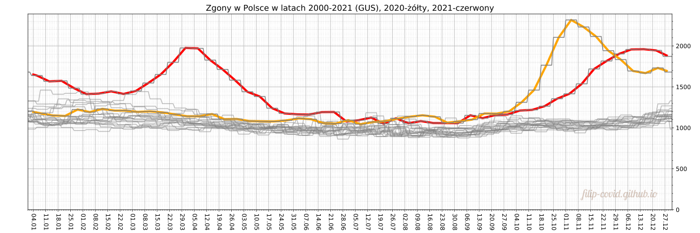
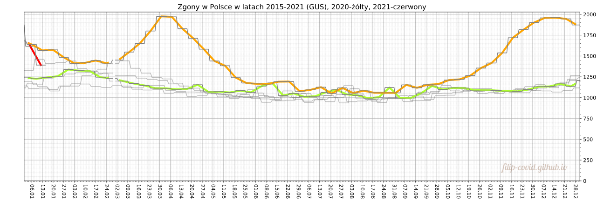
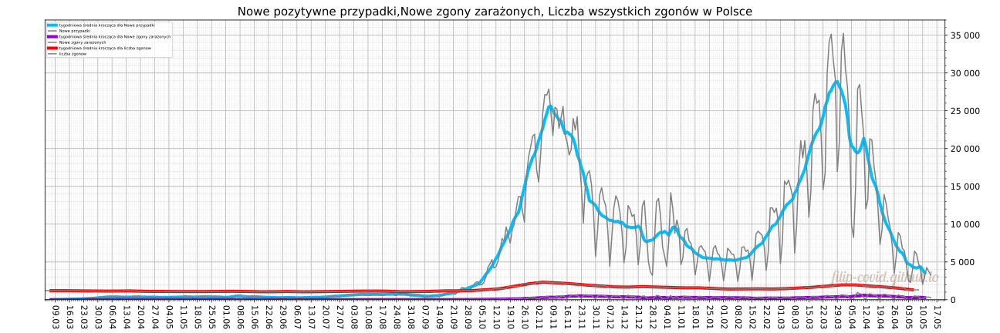
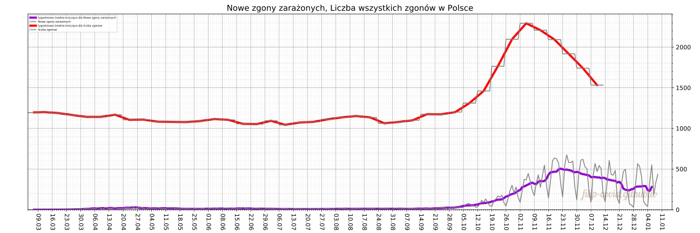
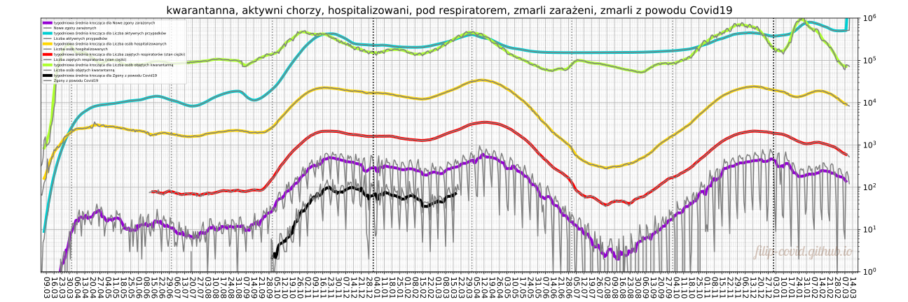
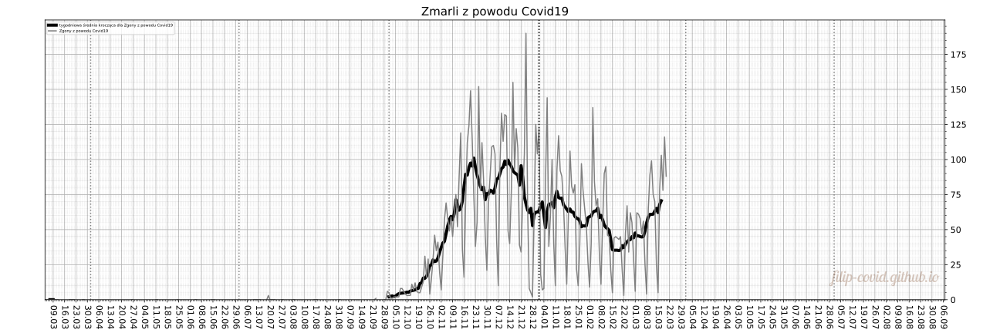

Last update: Thursday, 16.08.2021, 13:44:31 (graphs updated less frequently (about once a month))
[Home page] [Polish version] [Selected counties (only in polish)] [Deaths] [Vaccination] [Sources] [Contact]
coronavirus SARS-CoV-2, covid19
At the graphs below, the bold colourful lines are 7 day moving average of the numbers represented by thin gray lines. Zoom to see the finer grid with division on days.
Based on GUS (Statistics Poland) data on the total deaths per week in the last 21 years. The red line represents the average number of deaths per day in 2021, yellow-2020.

Based on GUS (Statistics Poland) data on the total number of deaths per week. The red line represents the average number of deaths per day in 2021, yellow-2020.

Based on GUS (Statistics Poland) data on the total deaths per week in 2020. The red line represents the average number of deaths per day in 2020 and 2021.

Based on GUS (Statistics Poland) data on the total deaths per week in 2020 and 2021.

in colours green, blue, yellow, red, violet, black respectively. Notice that the red and blue color means different things than on the previous graphs on this subsite.

In the chart above, on the vertical axis the scale is logarithmic.
